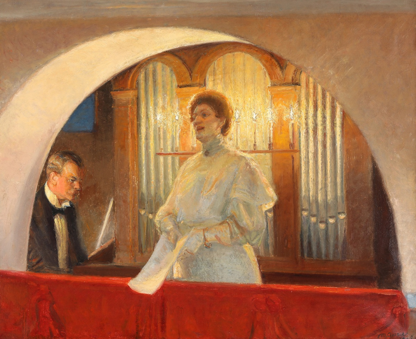
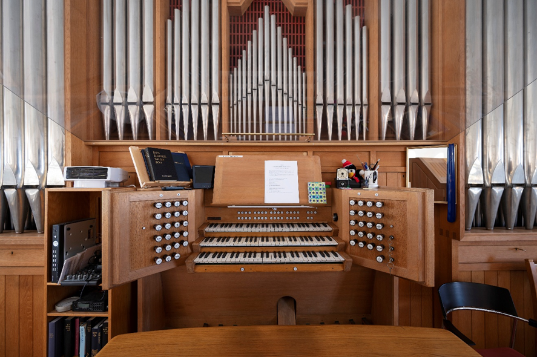
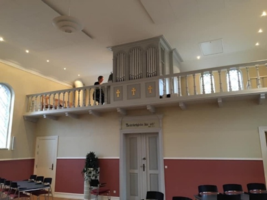
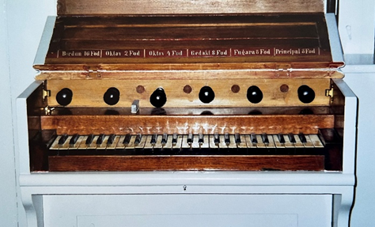
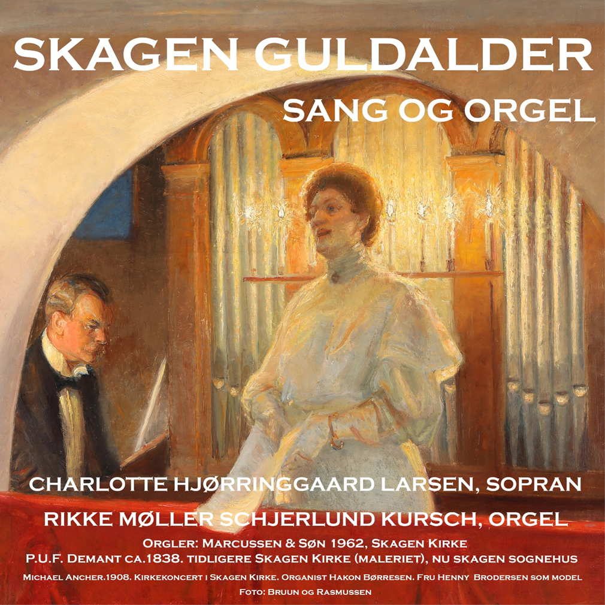

Michael Ancher og P.S.Krøyer Har begge i 1908 malet et lille maleri med en scene fra en koncert i Skagen Kirke. Komponisten Hakon Børresen sidder ved Demant orglet. Foran ses den norske operasangerinde Ellen Gulbranson. Da billedet senere bliver bearbejdet er sangeren for længst rejst og begge malere bruger deres lokale veninde Fru Henny Brodersen som model, da hun har en slående lighed med operasangerinden.

Maleri af koncerten i Skagen Kirke, 1908
Skagen Kirkes nuværende orgel er bygget af det danske orgelbyggerfirma Marcussen & Søn i 1962. Orgelfacaden er tegnet af arkitekt Christen Justesen senior. Pibernes symmetriske opdeling i felter i facaden er nøje afstemt efter arkitekterne Bindesbøll og Plesners symmetriske opbygning af Skagen kirke over rummets midterakse. Orglet er sidst blevet renoveret med nyt bælgeværk i 2010 og udvidet med 4 nye stemmer, så det i dag har 31 stemmer fordelt på 3 manualer og pedal.

Orglet i Skagen Kirke
Forfatteren Holger Drachmann (1846-1908), som havde sit hjem i Skagen, skrev i 1904 digtet "Erindring". Et digt om tiderne, der var engang, da kunstnerkolonien blomstrede, og ånden og kreativiteten i Skagen var stærk. "Der var et andet Skagen, et bedre om man vil". Flere satte melodi til digtet, men det blev Roland Bildes melodi folk bruger i dag. Roland Bilde (1906-1981) var organist i Skagen Kirke fra 1931- 1938 og skrev melodien i 1938 i anledning af indvielsen af "Fortidsminderne"- nu Kystmuseerne. Sangen er stadig populær i Skagen og er ofte ønsket som udgangsmusik til bisættelser. Her høres et arrangement over melodien skrevet og spillet af Rikke M.S. Kursch. (Organist ved Skagen Kirke 2015-).
Lyt til: Erindring. "Så hastigt svinder dagen"

Facaden på Demant orglet i Skagen Kirke Sognehus

Manualet på Demant orglet i Skagen Kirke Sognehus
Skagen Kirke stod færdig i 1840. Kirken afløste Sankt Laurentii kirke (Den Tilsandede Kirke), som blev lukket i 1795 på grund af sandflugten. Kirken manglede ved indvielsen et orgel til at ledsage salmesangen. Dronning Caroline Amalie skænkede derfor de fattige skagboer sit private orgel, som få år forinden kom til hendes sommerresidens Sorgenfri Slot. Det historiske P.U.F. Demant orgel stod i Skagen Kirke fra ca.1841 til 1910. Her akkompagnerede det skagboernes salmesang og lagde toner til koncerter, indtil kirken i 1910 blev ombygget og udvidet. Under ombygningen lånte menigheden Missionshuset Emaus til gudstjenester, hvorfor orglet blev flyttet over gaden til Missionshusets pulpitur. Den ombyggede og udvidede Skagen Kirke fik et nyt orgel, bygget af Starup, så Demant orglet blev stående i Missionshuset og har siden ledsaget salmesang til andagter, møder og ikke mindst den årlige juletræsfest, som mange ældre skagboer stadig forbinder lyden af orglet med. Da Missionhuset blev til Skagen Kirkes sognehus i 2007, blev orglet restaureret af orgelbygger Husted og fremstår derfor flot og velspillende i dag.
Er opvokset i København. Han ønskede at være komponist og blev oplært af Johan Svendsen, der var leder af det kongelige kapel. Hakon skrev her sin første symfoni og fik med den stor anerkendelse også udenfor landets grænser. Men han forblev gennem sit komponistvirke i den samme romantiske stil og blev med årene betragtet som konservativ og gammeldags. Børresen var fascineret af havet, og han delte sit liv mellem en lejlighed i Københavns centrum og længere ophold i Skagen. I 1910 tegnede Ulrich Plesner et hus, som Børresen lod opføre og kaldte "Kaddara". Hakon indgik i Kunstnerkolonien, og om sin kærlighed til Skagen skriver han:
"Her er fred og ro, dejligt om sommeren, men også storartet om vinteren. Skagen ligger på den nordligste spids. Havet er det samme som for 50 år siden – den vældige horisont og det store luftmaleri. Jeg kan ikke se andet end, at der er stor forbindelse mellem malerkunst og musik. Krøyer arbejdede således gerne til musik, og jeg har ofte spillet i hans atelier, når han malede".
I dag betyder det ikke så meget, at Børresen var konservativ. Hans musik står smukt og skønt i den romantiske stil med svulmende melodier og skønne fortællinger.
Også kaldet "Vuggevise" er et bud på et værk, der kan have været opført ved koncerten i 1908, som begge malere har foreviget. Værket er skrevet af Hakon Børresen, og akkompagnementet passer fint til orglet.
Charlotte Hjørringgaard Larsen synger, og organist Rikke M.S. Kursch akkompagnerer på det lille Demant orgel.
Lyt til: "Sov nu, mit Hjerte"
Optagelserne er en snigpremiere på denne udgivelse som udkommer ultimo Maj 2025

Cover af Skagen Guldalder - Sang og Orgel